Designing with Federation Homes: Honouring the Past, Living in the Present
Federation homes are woven throughout the cities and towns of Australia, and for many they represent the ultimate renovation project. Rich with history and built with a level of craft that simply cannot be replicated today, bringing one into the present takes a careful hand.
Many of our clients come to us with Federation homes to restore, sometimes lovingly maintained, sometimes in need of significant work. In either case, the goal is the same: a home that functions well for modern family life, without losing the soul of what gives the building its identity. The challenge, and genuinely the joy, is combining both successfully.
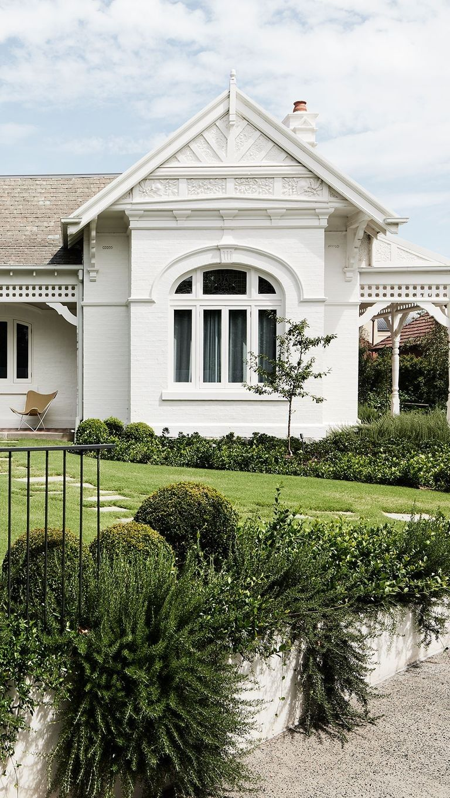
A beautifully painted Federation facade, its ornate gable pediment and arched leadlight window framed by a deep return verandah.
Preserving What Makes Them Worth Keeping
The traditional details of a Federation home are not merely decorative, they are the building's identity. Leadlight windows that change colour in the light, decorative ceilings with their repeating geometric patterns, beautiful wide floorboards smooth with decades of use, timber fretwork in the gables and verandahs: these are the elements that make someone fall in love with a home before they have even stepped inside.
Sadly, many Federation homes carry no heritage listing and are being demolished to make way for development that bears little relationship to the street, the neighbourhood, or the people who have lived there. Where our clients choose to renovate rather than replace, they are making a meaningful decision, and one we support fully.
Our approach is to retain, restore and celebrate every Federation feature we can. Where elements need repair, cracked plaster work, damaged leadlight, worn or missing verandah tiles, we source sympathetic materials and work with trades who understand the craft. Nothing is stripped out without thought. Everything is reconsidered with care.
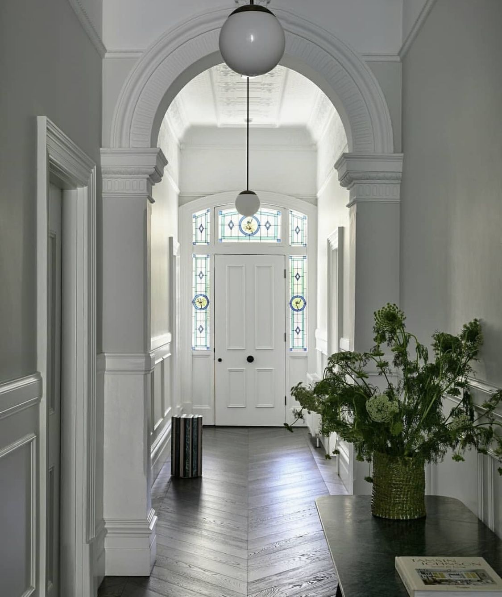
Original leadlight door surround in this Federation home, blends beautifully with new herringbone flooring and a contemporary colour palette.
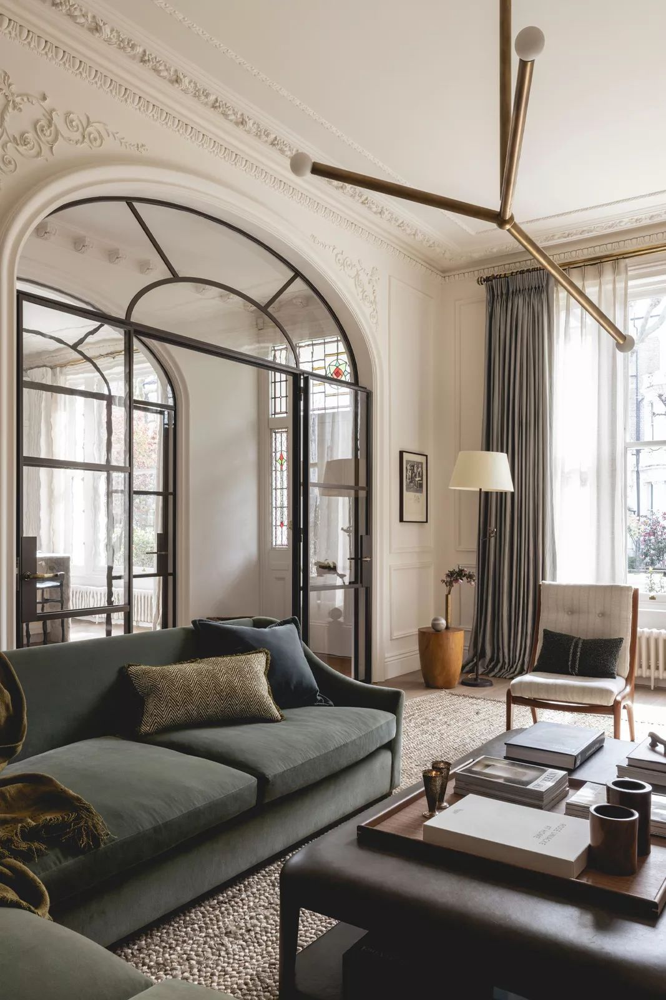
An ornate plaster cornice retained above a glazed archway, original detail meeting contemporary steel framing.
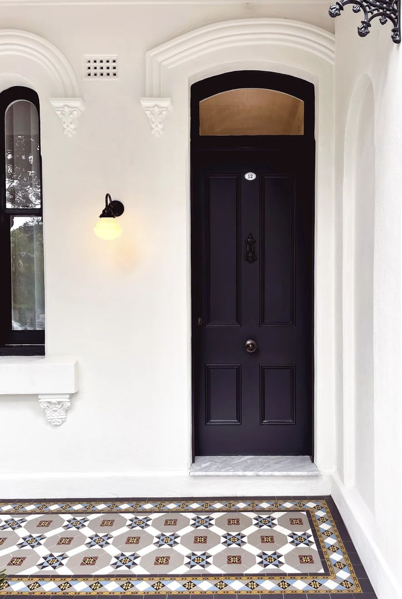
A tessellated tile verandah floor in geometric pattern, original to the home.
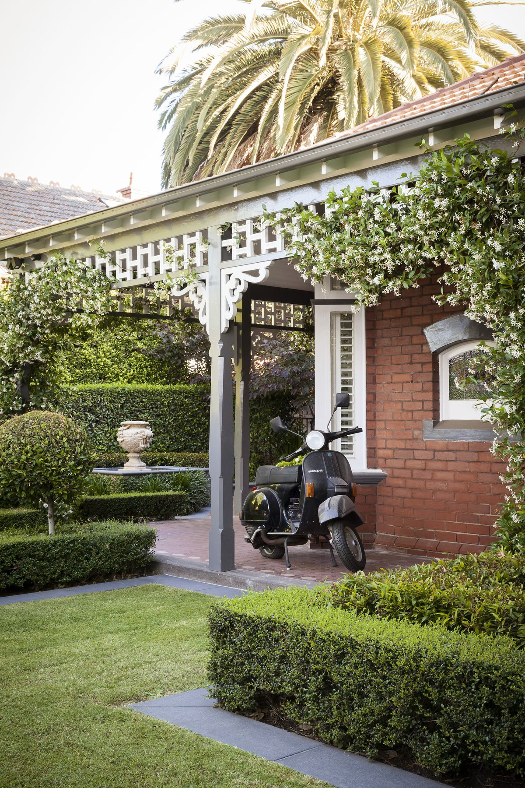
Timber fretwork lacework beneath the verandah gable, a defining Federation flourish.
Starting with a Good Plan
Before any work begins on a Federation home, the single most important investment is time spent on a well-considered brief and a clear plan. These are complex buildings, with structural quirks, layered renovation histories and sensitivities that are not always apparent until you start looking closely. Getting the planning right from the outset saves enormous time, cost and disappointment later.
This means engaging an architect or designer early, before builders are quoted and before decisions are made about what stays and what goes. A good plan considers the building holistically: the orientation, the flow between spaces, the relationship to the street and to the garden, the structural walls that define what is possible. It also considers the sequencing of work, because in a Federation renovation, the order in which things happen matters more than most people expect.
We always encourage clients to resist the temptation to start with finishes, the kitchen, the bathroom, the tiles, before the plan is properly resolved. Finishes are genuinely the easier part. It is the plan that determines whether a home will feel right to live in for the next thirty years, and it deserves the time and consideration it needs at the beginning of the process.
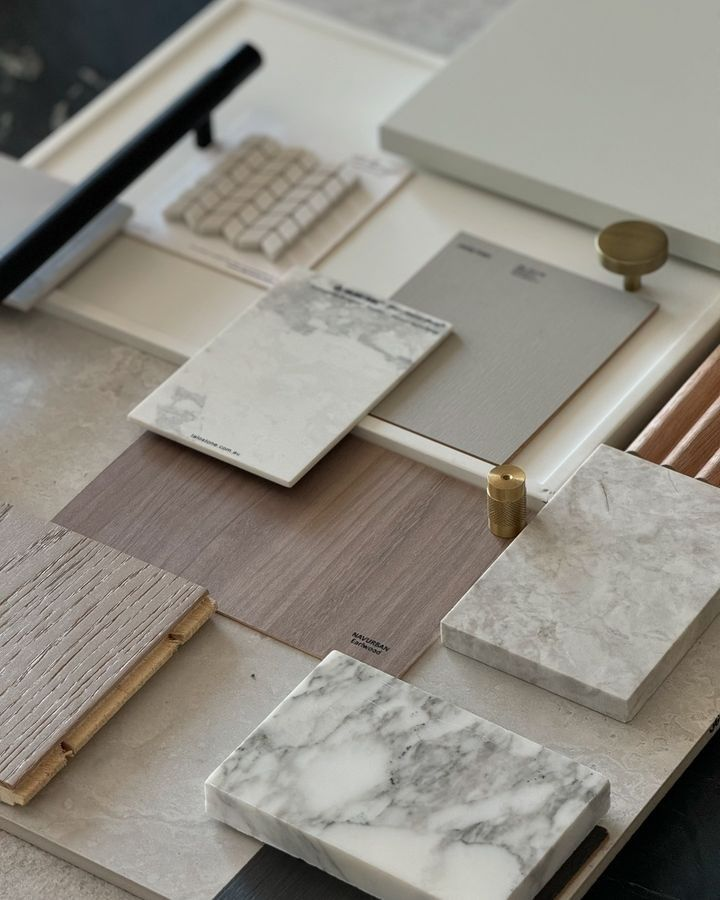
Material samples, timber and stone finishes considered together, once the plan itself is resolved.
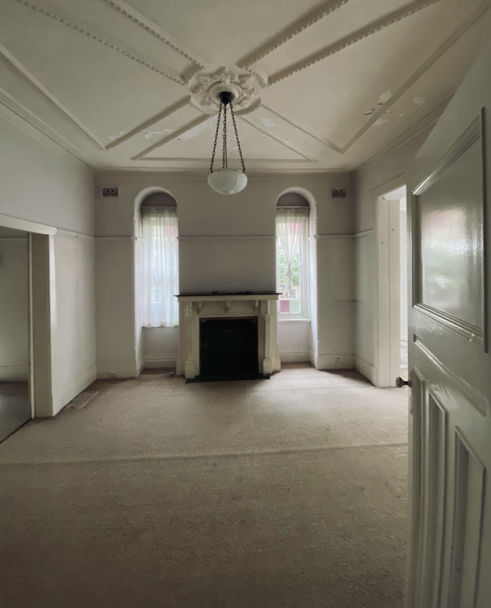
Before: this sitting room with its original fireplace, ceiling detail and arched leadlight windows in our Mosman Federation renovation deserved to be renovated.
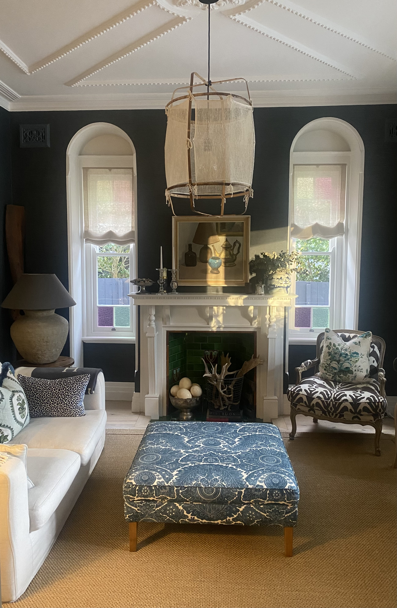
After: a contemporary makeover with dark toned grasscloth wallpaper providing a dramatic contrast to the heritage features, combined with an eclectic mix of furnishings to make a cosy retreat in this family home.
Opening Up the Floor Plan
The original floor plan of a Federation home reflects a different way of living: formal rooms for formal occasions, a kitchen kept separate from entertaining spaces, corridors that divide rather than connect. It made perfect sense for its era. For most families today, it does not.
The most common brief we receive from Federation clients is some version of the same request: we want to open it up so it flows. That typically means a thoughtful extension at the rear, often single-storey, often connecting to an existing living area, that creates the open-plan kitchen, dining and living space that contemporary family life calls for. The original rooms at the front of the home, the formal lounge, the separate dining room, the generous bedrooms with their high ceilings and picture rails, are then freed to become what they were designed to be: quieter, more considered spaces with a different purpose from the busy rear of the home.
The key principle is that the extension must never fight the original. It should read as a respectful response to what is already there: materials chosen to complement, proportions that feel right including a flow through of ceiling heights, a transition between old and new that is easy to move through without feeling like you have walked into a different building.
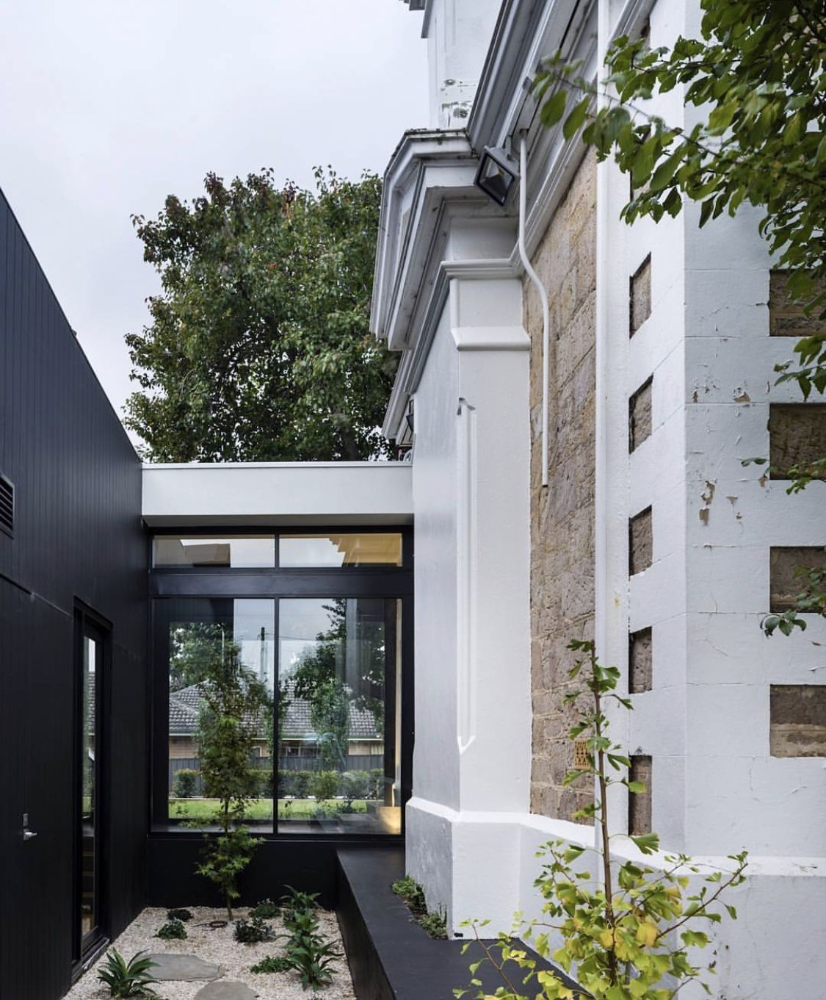
A considered contemporary addition sits quietly alongside the original fabric, in black cladding and steel-framed glazing that never competes with the home it extends.
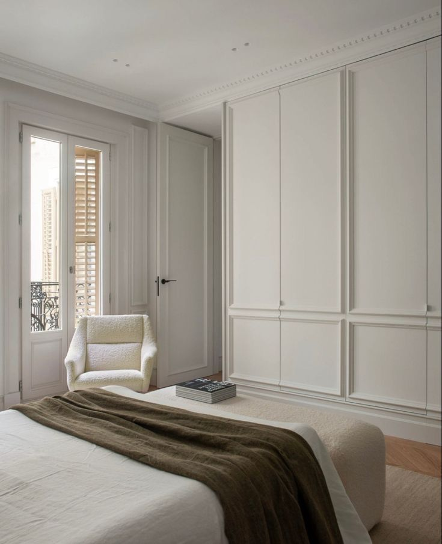
A light-filled addition elsewhere in the home, contemporary in feel but calm and considered.
Adding a Second Storey
For Federation homes on smaller blocks, or where the ground-floor footprint simply cannot expand further, a second storey addition is often the most considered solution. Done well, it can double the living space without sacrificing the garden, which, in a Federation property, is often one of its most valuable assets.
The design challenge is real. A second storey must sit respectfully above the original roofline and in some instances not be visible from the street, which typically means working within the pitch and proportion of what is already there, or setting the new level back from the street so it reads as a subordinate addition rather than an imposition on the original. The materials chosen above need to respond honestly to what sits below: brick, render or cladding that speaks the same architectural language without pretending to be something it is not.
Internally, the staircase becomes one of the most important design decisions in the project. In a Federation home, a staircase can be a genuine feature, generous in proportion, with a timber balustrade and a landing that feels considered, or it can become a utilitarian afterthought that works against the character of everything around it. We invest real time in getting this detail right, because it is the physical connection between the original home and the new addition, and it sets the tone for the whole upper level.
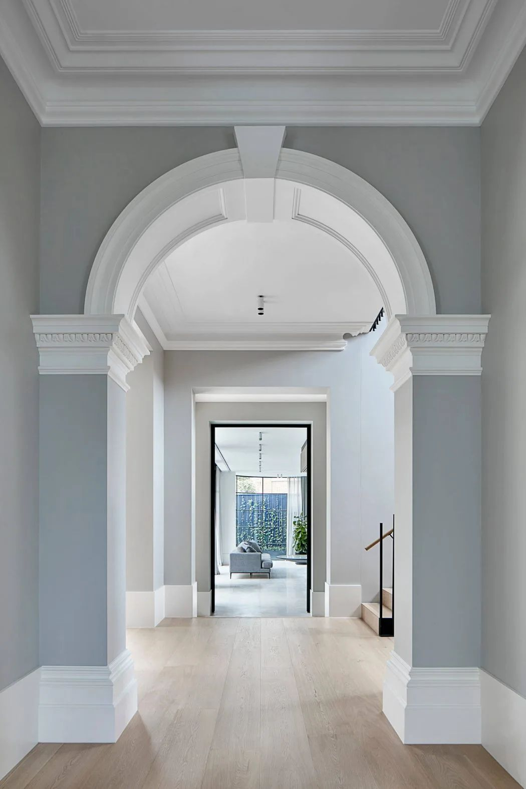
A generous archway leading through to the staircase, the connection between the original home and what sits above it.
Natural Light and the Indoor-Outdoor Connection
Many Federation homes were built before orientation was a primary design consideration. They sit on their block the way the street required, and the result is sometimes rooms that receive very little natural light, or a back garden that the house turns away from rather than opens to.
Addressing this is almost always part of a Federation renovation brief. The goal is to bring natural light into the plan and to create a genuine relationship between the interior and the garden, not simply a door that opens onto a step, but a considered connection that makes both the inside and outside feel larger and more liveable.
This might mean new glazing across the rear of the extension, a skylight introduced over a previously dark kitchen or hallway, or a carefully considered outdoor room that sits between the house and the garden and belongs to both. When done well, this single aspect of a renovation is often what clients point to as the most transformative change: not the new joinery, not the finishes, but the light that flows into the home.
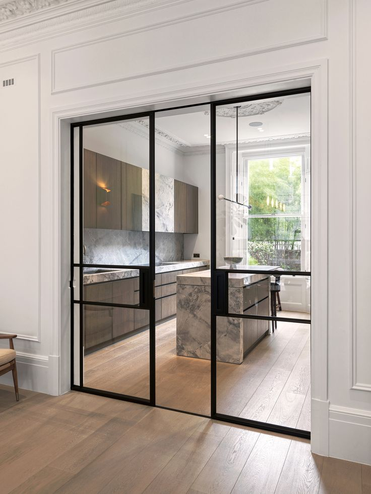
Steel-framed glazing brings natural light deep into this kitchen, which combines original Federation cornice and ceiling rose with contemporary joinery.